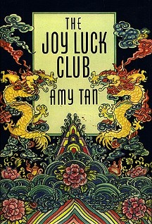
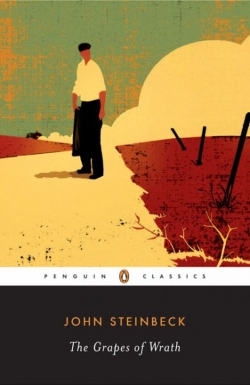
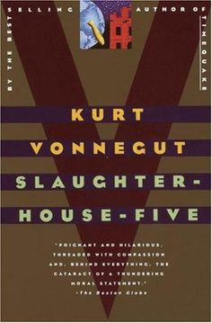
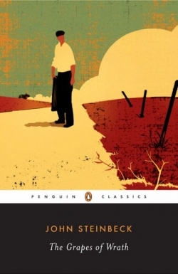
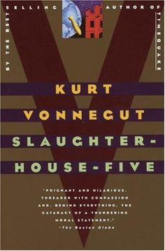

My favorite books include The Joy Luck Club by Amy Tan, The Catcher in the Rye by JD Salinger, The Grapes of Wrath by John Steinbeck, and Slaughterhouse-Five by Kurt Vonnegut. Also part of my favorites are the plays A Doll's House and Ghosts by Henrik Ibsen.
 


